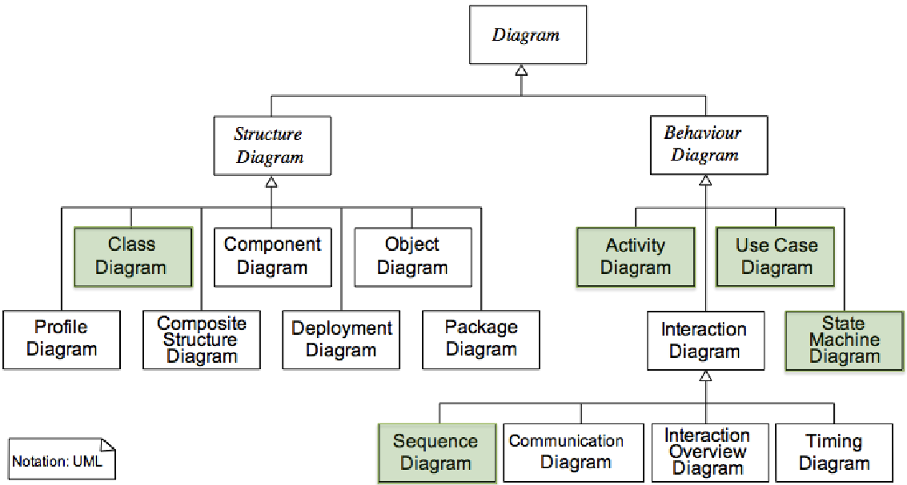

2 Introduction to UML
This chapter provides an overview of the Unified Modelling Language (UML), the industry-standard language for specifying, visualizing, constructing, and documenting the artifacts of software systems.
2.1 UML in a Nutshell
UML is a general-purpose visual Modelling language designed to provide a standard way to visualize the design of a system. It is crucial to understand what UML is and what it is not:
- Unified: It is an industry standard managed by the Object Management Group (OMG), an international consortium of major software companies like IBM and Microsoft. Its goal is to be the lingua franca for business analysts, software architects, and developers.
- Modelling: It is primarily a graphical language used to create models of both application domains (the problem) and software systems (the solution).
- Language: It provides a set of notations (diagrams) but is not a method or a process. A process provides guidance on the order of activities and the artifacts to be developed, whereas UML is intentionally process-independent.
Despite some criticisms, UML remains the undisputed leader in software Modelling, supported by a vast number of tools and methods.
2.2 History and Philosophy
UML was created in the mid-1990s from the unification of several popular object-oriented modelling methods, most notably those of Booch, Rumbaugh (OMT), and Jacobson (OOSE), often called the “three amigos”. It was standardized by the OMG in November 1997 (UML 1.1) and has evolved significantly since then, with the current version being UML 2.5.
The philosophy behind UML is one of unification by union, rather than intersection. This means it aims to be highly versatile and capable of representing entire systems across various domains like real-time systems, banking, and scientific applications.
This versatility, however, comes with a trade-off:
- Pros: UML is a well-accepted standard, versatile, and supported by many tools.
- Cons: It can be overly complex, with “too many constructs for some concerns and missing ones for others”. It also has a relative lack of formality and coordination between its various notations, which can lead to ambiguity.
2.3 UML Diagrams: An Overview
UML provides a wide range of diagrams to model different aspects of a system. These are broadly categorized into two main types: Structure Diagrams and Behaviour Diagrams.

2.3.1 Structure Diagrams (Static View)
These diagrams depict the static structure of the system, its components, and the relationships between them at different levels of abstraction. They represent the elements that must be present in the system being modelled.
- Class Diagram: The cornerstone of object-oriented modelling. It describes the structure of a system by showing its classes, attributes, operations, and the relationships among them.
- Component Diagram: Depicts how a software system is split into modular components and shows the dependencies and interfaces among these components.
- Deployment Diagram: Models the physical deployment of artifacts on nodes. It shows the hardware of your system and the software deployed on that hardware.
- Object Diagram: Shows a snapshot of the instances in a system, the objects and their relationships, at a particular point in time. It is often considered a special case of a class diagram.
- Package Diagram: Organizes elements of a system into groups (packages) to manage complexity. It shows the dependencies between these packages.
- Composite Structure Diagram: Shows the internal structure of a class and the collaborations that this structure makes possible.
- Profile Diagram: A specialized diagram used for extending the UML metamodel for specific platforms or domains.
2.3.2 Behaviour Diagrams (Dynamic View)
These diagrams illustrate the dynamic behaviour of the system, focusing on how its components interact and change over time. They represent what happens in the system being modelled.
- Use Case Diagram: Describes the high-level functions of a system from an external point of view, showing how users (actors) interact with it to achieve specific goals.
- Activity Diagram: Shows the flow of control or data through a system, useful for Modelling business processes, complex operational workflows, or algorithms.
- State Machine Diagram: Models the behaviour of a single object, specifying the sequence of states it goes through during its lifetime in response to events.
- Sequence Diagram: An interaction diagram that emphasizes the time-ordering of messages between objects or components. It is particularly useful for understanding the chronology of method calls.
- Communication Diagram: (Formerly Collaboration Diagram) Another type of interaction diagram that emphasizes the structural organization of the objects that send and receive messages, rather than the time-ordering.
- Interaction Overview Diagram: A hybrid of an Activity Diagram and Sequence Diagrams. It provides a high-level view of the control flow of an interaction, where individual steps can be represented as more detailed sequence diagrams.
- Timing Diagram: An interaction diagram that focuses on the timing constraints of messages, showing how the state of an object changes over a specific timeline.
While this course will not cover every diagram in detail, this complete overview provides the necessary context for understanding the full scope and power of UML. Our focus will remain on a core subset most critical for the analysis and design phases.